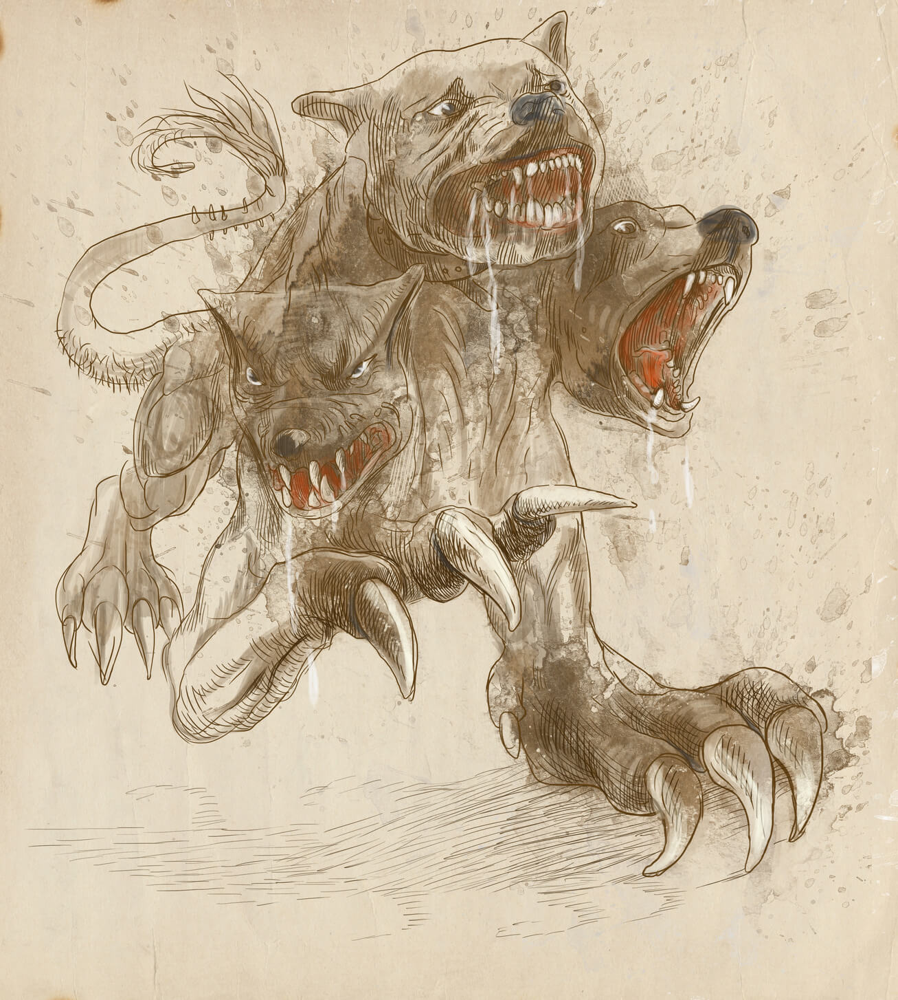
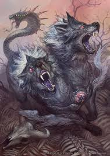
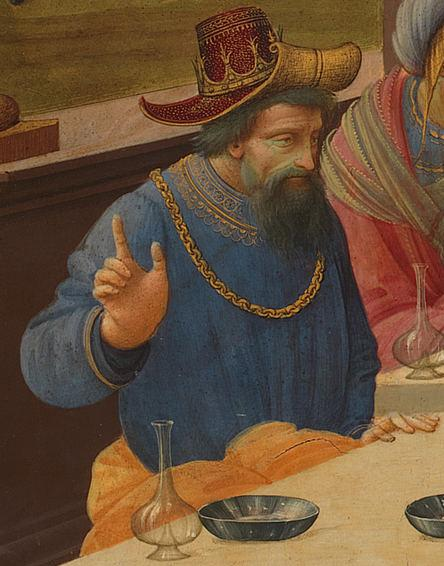
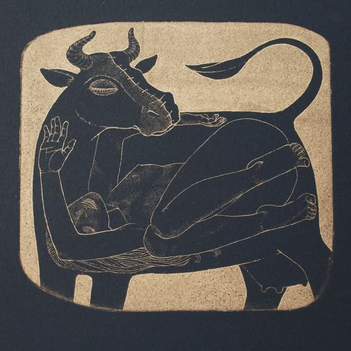
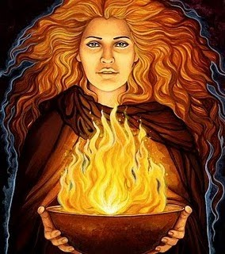
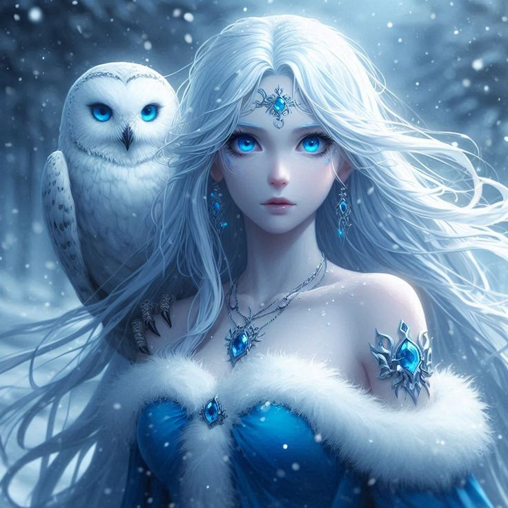

Caos
Gaia
Tártaro
Eros
Érebo
Nix
Urano
Tifão
Oureas
Pontos
 Ciclopes
Ciclopes
Hecatônquiros
Afrodite
 Fúrias
Fúrias
Éter
Hemera
Moiras
 Hespérides
Hespérides
Nêmesis
 Fórcis
Fórcis
Ceto
Euríbia

Cérbero
Hidra de Lerna
Leão de Neméia
Dragão de
Cólquida
Cólquida
 Quimera
Quimera

Ortros
 Medusa
Medusa
Esteno
Euríale
Dino
Ênio
Pefredo
Crisaor
Pégaso
Equidna
Gerião
Nereu
Jápeto
Taumas
Oceano
Tétis
Crio
Hipérion
Téia
 Ceos
Ceos
Febe
Mnemosine
 Electra
Electra
Íris
Aelo
Ocípite
Celeno
Calírroe
Clímene
Pleione
 Estige
Estige
Nique
Bias
Zelo
Cratos
Palas
Atlas
Prometeu
Epimeteu
Menoécio
 Maia
Maia
Astreu
Eos
Hélio
Selene
Circe

Eétes

Pasifae
Perses
Astéria
Leto
Ventos
 Cronos
Cronos
Réia
Zeus
Hera
Hades
Poseidon

Héstia
Deméter
Apolo
Ártemis
Atena
 Hermes
Hermes
Quíron
Têmis
Hécate
Musas
Horas
Perseida
Filira
Métis
Dóris
Anfitrite
Nérites
Tritão
Cimopoleia
Árion

Despina
Ares
Hefesto
Hebe
Ilítia
Perséfone